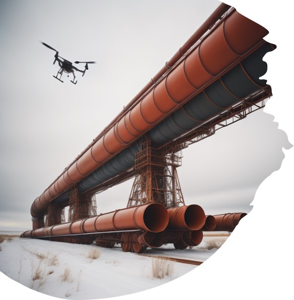
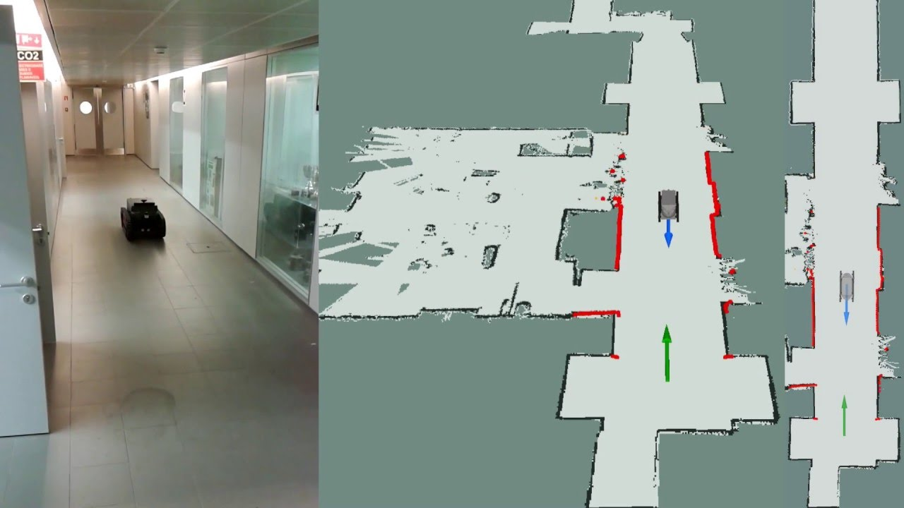
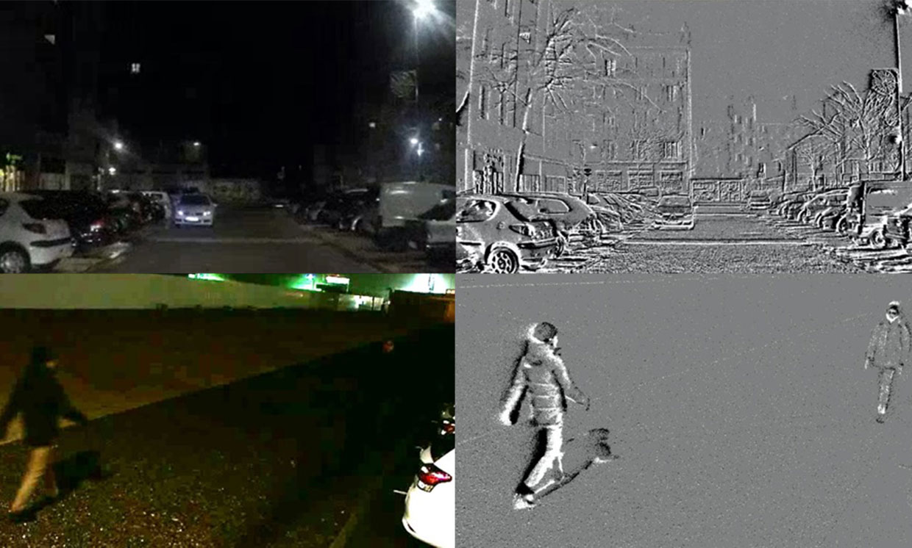
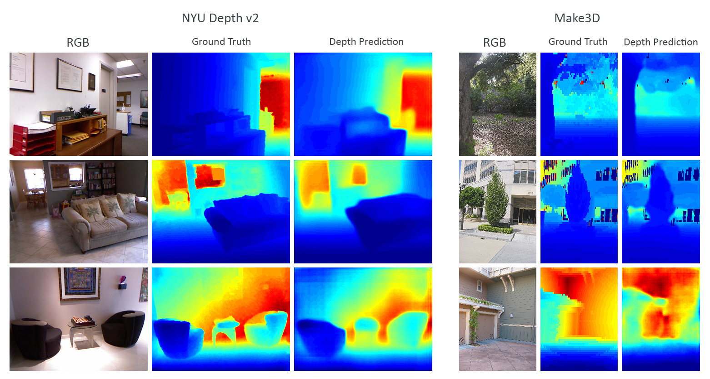
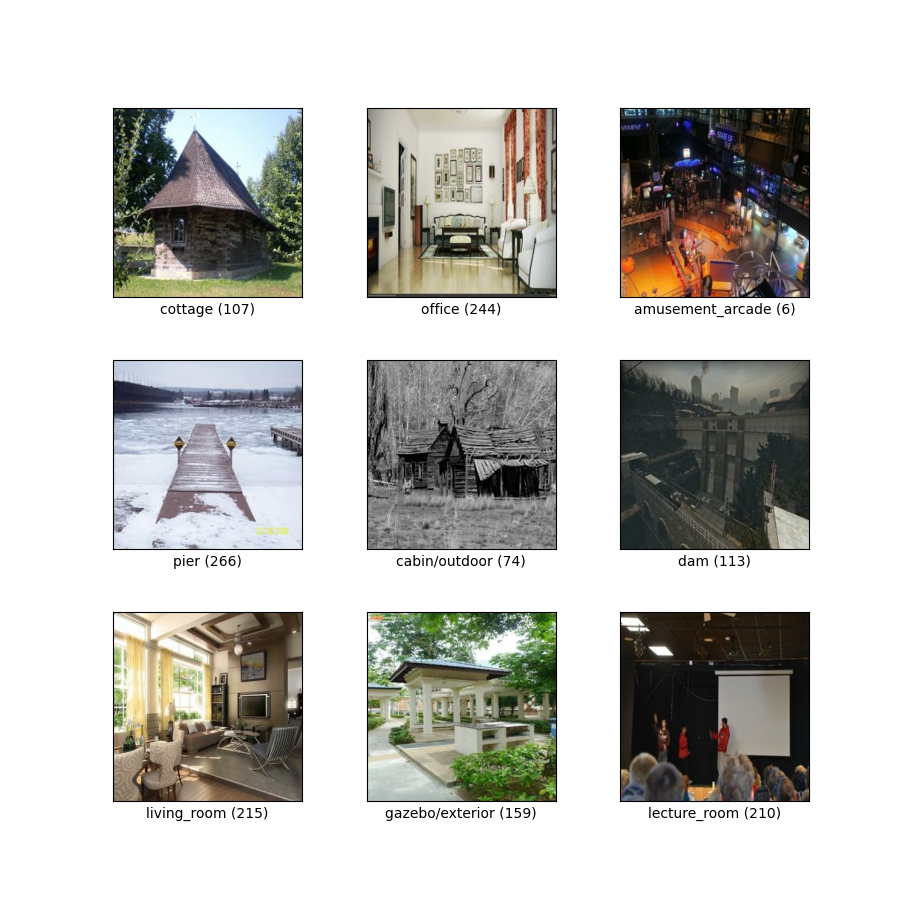
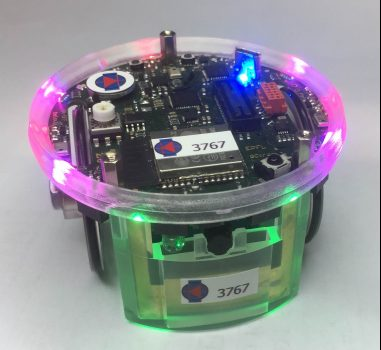

This project aims to address the issue of pipeline leaks in the petroleum sector by deploying an intelligent drone equipped with LiDAR sensors, RGB cameras, and a depth camera.
The drone has the capability to perform 3D mapping of the environment, detect pipeline leaks using computer vision, track pipelines, and avoid obstacles. In this project, we compare two computer vision models: Facebook's Detection Transformer and Ultralytics' Yolov8.


The Extended Kalman Filter algorithm is employed to fuse visual odometry readings and GPS readings in order to achieve precise robot localization.. The Oxford Robot Car Dataset is used for this project. In robot localization, GPS alone isn't accurate due to local obstacles and limited precision. To improve accuracy, the Extended Kalman Filter fuse odometry and GPS data, reducing odometry drift and enhancing GPS positions for outdoor robotics.

The event camera capture changes in brightness asynchronously and in real time having the advantage of low power consumption, High Dynamic range as compared to conventional cameras. The Prophesee EVK3 and EVK4 event camera is designed to wirelessly transmits event frames via an image pipeline to an Nvidia Jetson remote workstation using a Raspberry Pi 4 companion computer. A 3D mount for the camera was designed using AUTOCAD.

In this project, a Lidar histogram is utilized to create a depth map of the environment using a straightforward match filter algorithm. The depth map aids in visualizing the distances of objects within a scene.

In this project a subset of the MIT Places dataset has undergone testing with a variety of machine learning algorithms to classify different locations, and their respective accuracies have been compared.

Using Genetics Algorithm, an E-puck Robot is trained to navigate through a maze environment and reach its destination.
In this project, an ultrasonic sensor is employed to detect incoming intruders, triggering an alarm system in response.
In this project we are able to smoothing an image, improve the lighting of a dark image and remove ripples from images.
This project makes use of C# to build a Windows Desktop Application for retail management of an African Restaurant.